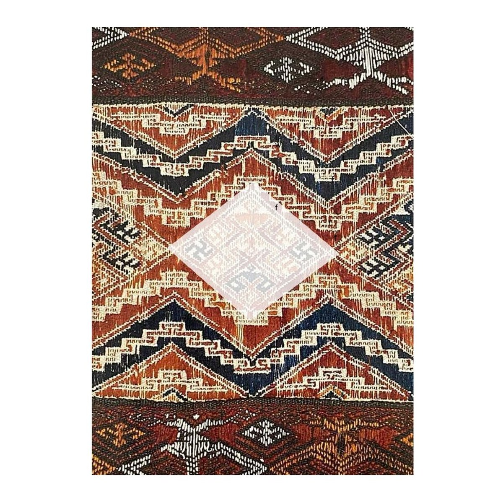
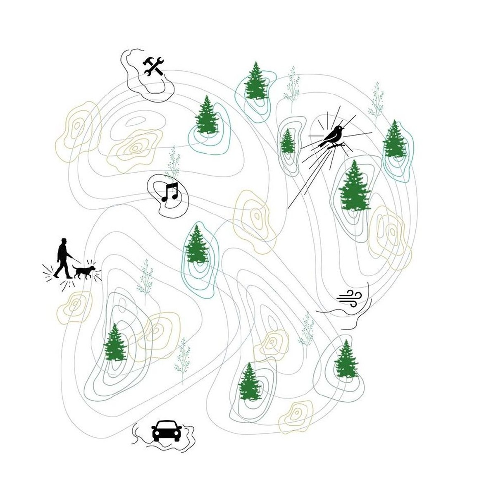
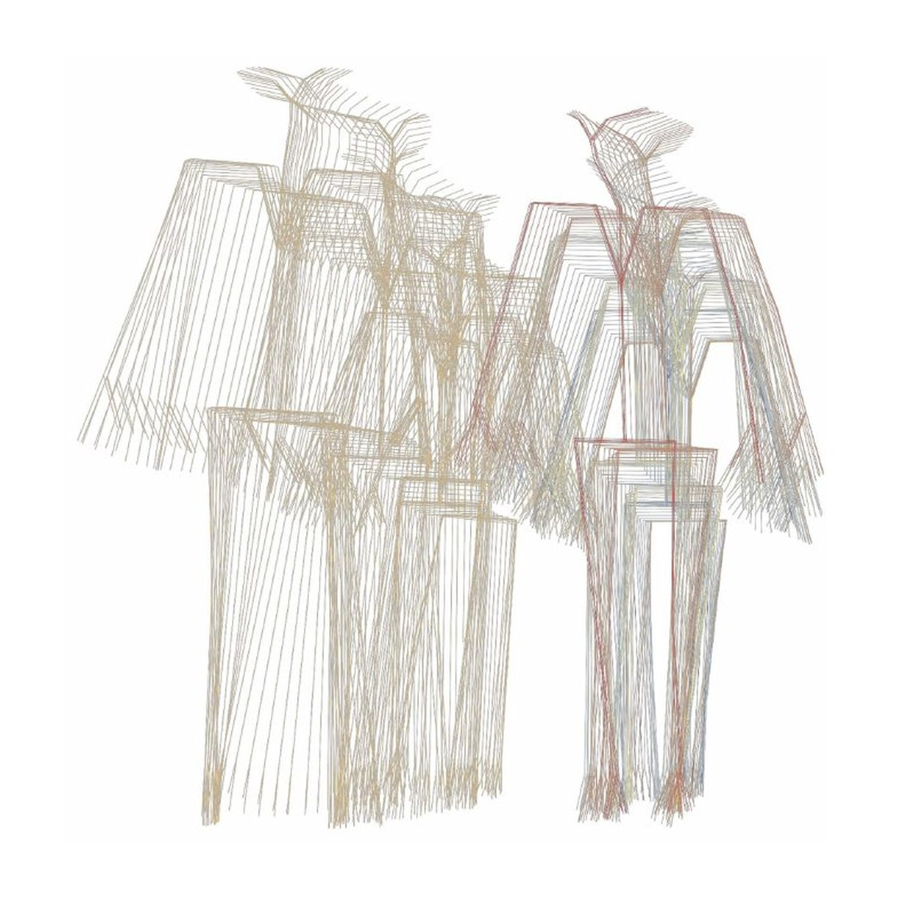
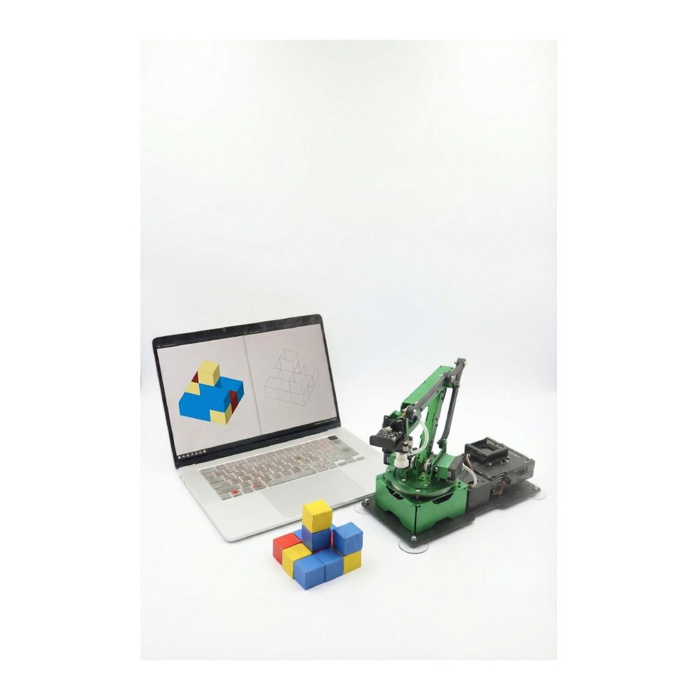
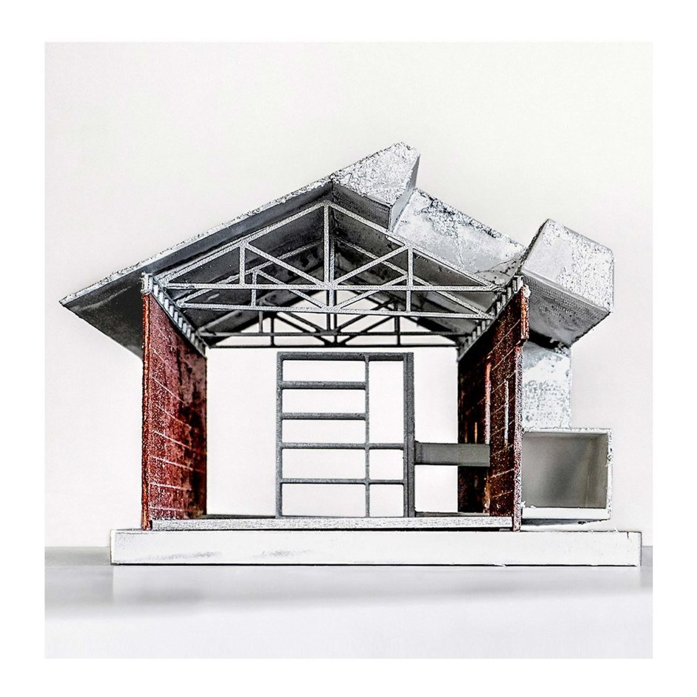
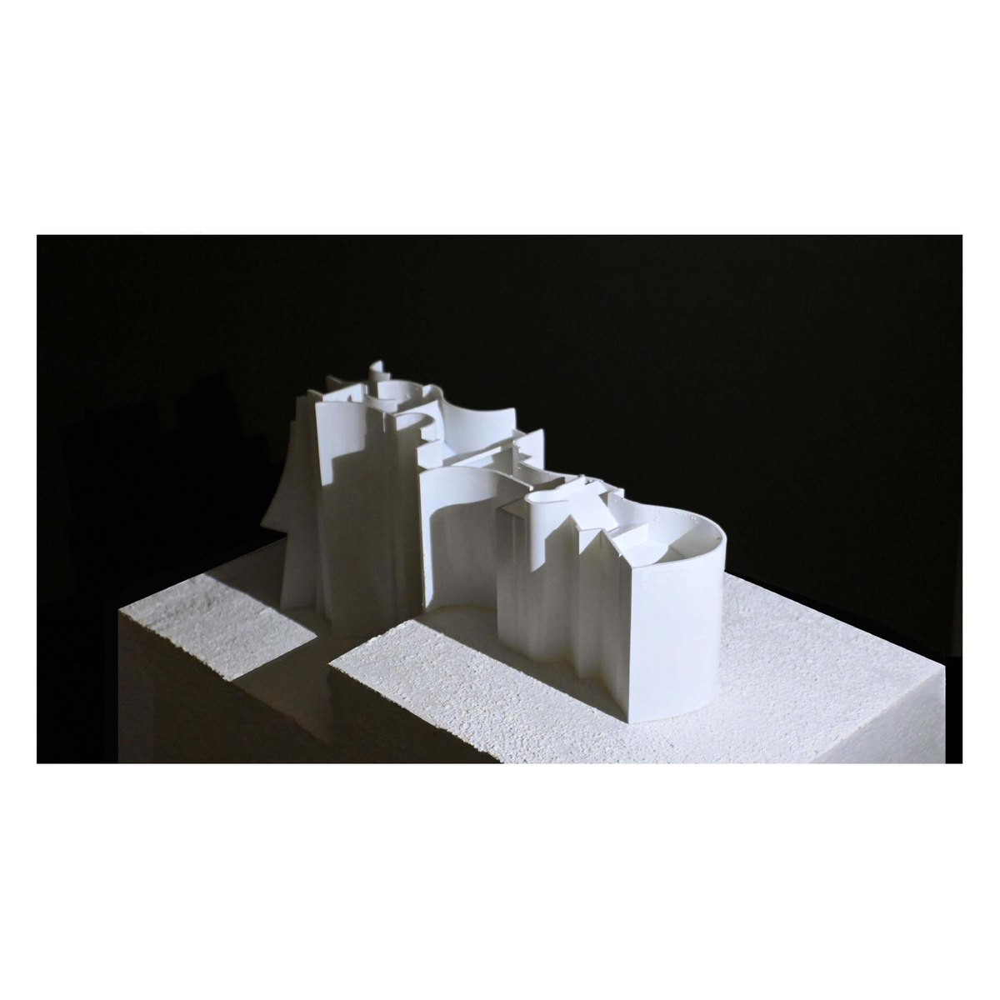
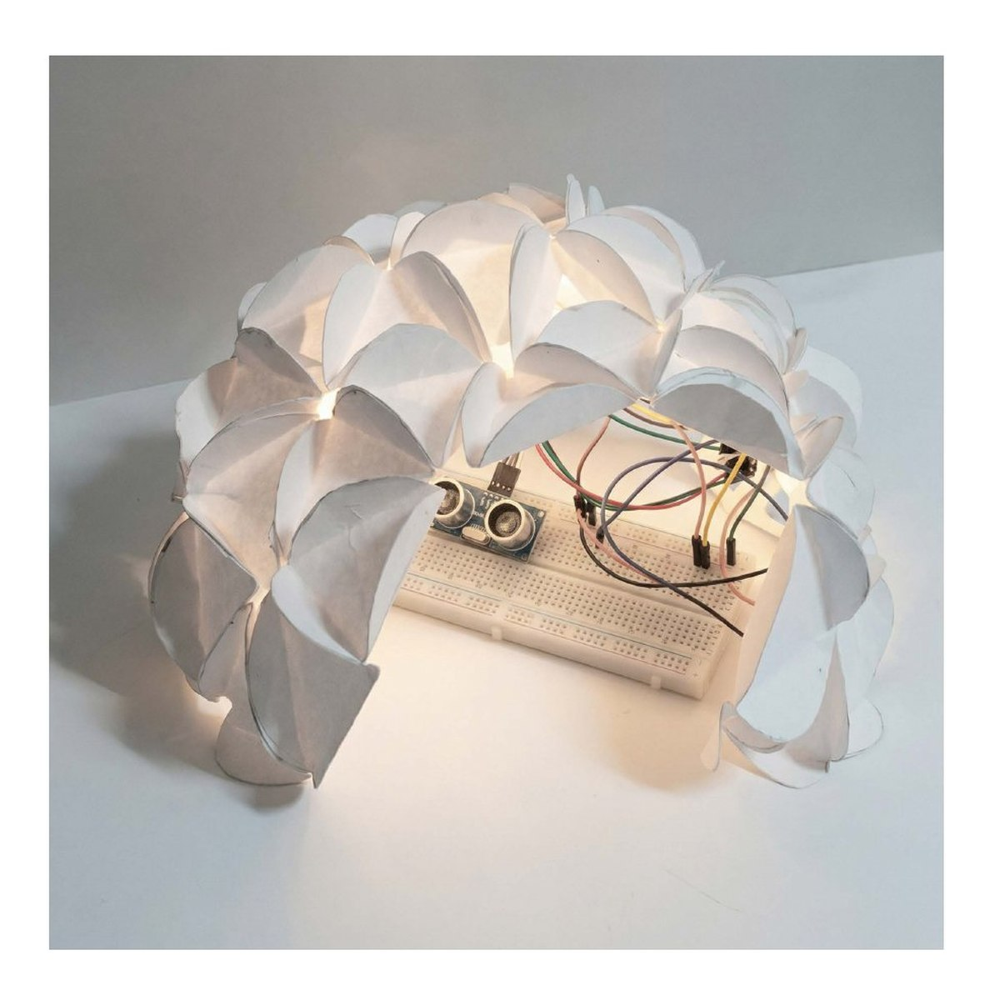
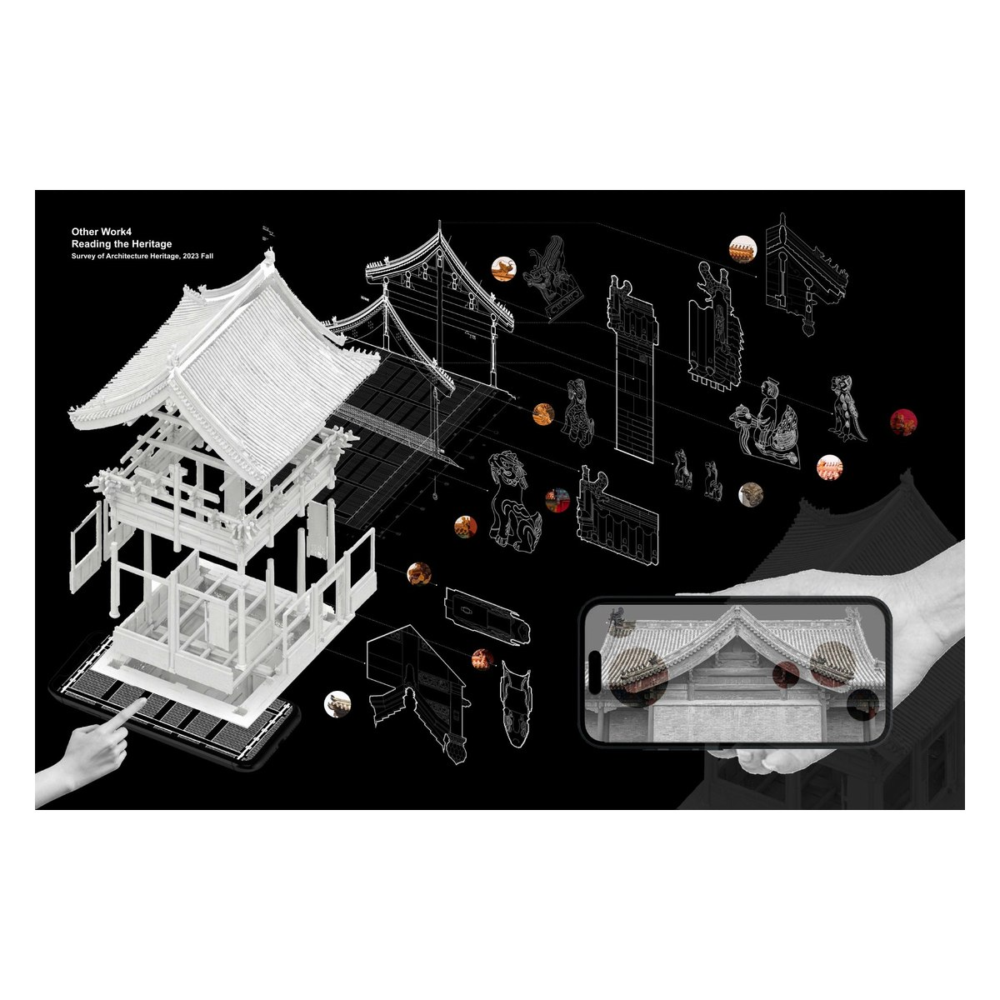

Zining Liu
I'm a SMArchS Computation student at MIT. My research focuses on artificial intelligence and computational design, with interests in multimodal learning, vision-language models, and agentic systems. I investigate how multimodal information can be integrated to model complex real-world environments and support design decision-making.
The projects below run the full loop: collecting and annotating data, training generative or predictive models, and putting the result back in front of people to study how they use it.

LiWeaving
Generative AI for Li brocade design supporting cultural interpretability and creative expression

Urban Soundscape
A two-stage framework for urban sound composition and perceptual prediction

Humanizing Mixed Reality
Interactive design with behavioral computation

Latent Agent
Co-designing with robotic arms of different preferences

PLUG-IN
A kindergarten plugged into an existing industrial shed

SHELTER
From vulnerability to resilience — form derived from body motion

MEDUSA
A folded petal-shell canopy with embedded sensing and light

Reading the Heritage
A timber-frame survey redrawn as an exploded reading
About
Each project pairs a different set of modalities with a design task. LiWeaving couples motif images with their cultural semantics through CLIP and a vision–language model, so that generation is conditioned on meaning rather than style alone. Urban Soundscape learns across street-view imagery, environmental audio and geospatial data to predict both what a place sounds like and how people say it feels. Humanizing Mixed Reality reads tracked bodies as a social-intensity field and generates roof geometry from it. Latent Agent treats the collaborator itself as the variable, studying how a designer adapts when the agent across the table holds preferences it never states.
Earlier design work — adaptive reuse, body-driven form, a built prototype, a heritage survey — runs from 2021 to 2023 and sits at the end of the list above.
- Education
- SMArchS Computation, MIT
- Interests
- Multimodal learning, vision–language models, agentic systems, computational design, human–AI co-creativity
- Methods
- Diffusion & GAN models, CLIP / VLM annotation, machine learning on geospatial data, shape grammar, XR, user studies
- Contact
- ziningl@mit.edu